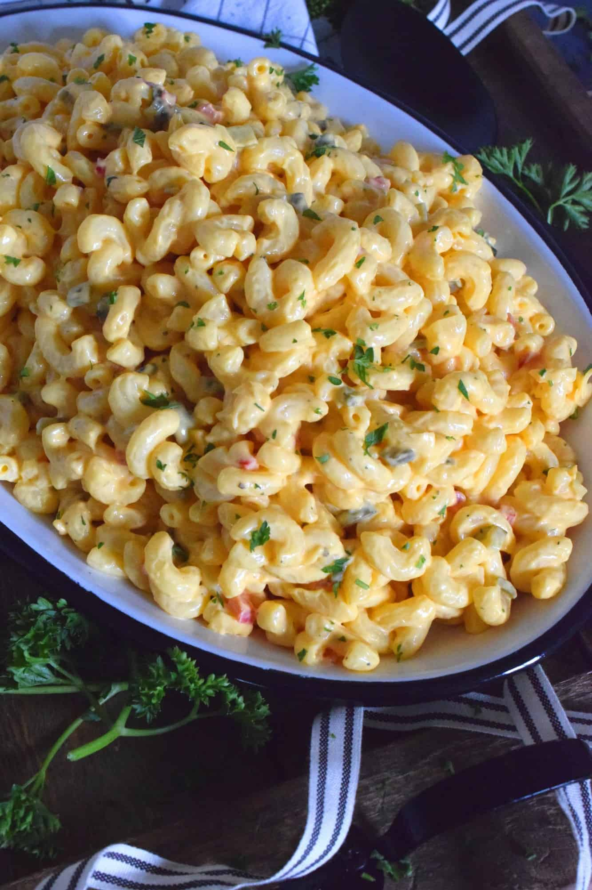

Sylvester Mcmonkey Mcbeans Macaroni And Cheese Salad

Description
Luxurious macaroni and cheese salad to feed 6 hungry macaroni and cheese lovers.
You'll need the following: medium saucepan, colander, knife, medium mixing bowl,
small mixing bowl, mixing spoon
Ingredients
- 1-1/4 cup elbow macaroni
- 3/4 cup cubed cheddar or American cheese
- 1 stalk of celery, sliced
- 1/2 small green pepper, chopped
- 1/4 cup mayonnaise
- 1/4 cup sour cream
- 2 tablespoons milk
- 1/4 teaspoon salt
Steps
- Cook macaroni according to package directions. Drain macaroni. Rinse with cold water and drain again.
- In a medium mixing bowl, combine macaroni, cheese, celery, and green pepper. Stir gently to combine.
- For dressing, mix mayonnaise, sour cream, milk, and salt in a small bowl. Toss macaroni mixture with dressing.
- Cover and chill for at least 3 hours.
Homepage